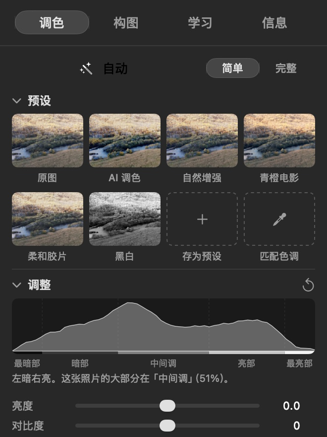
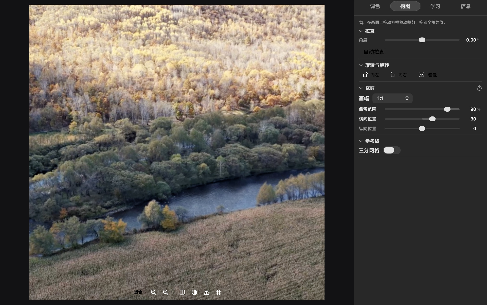
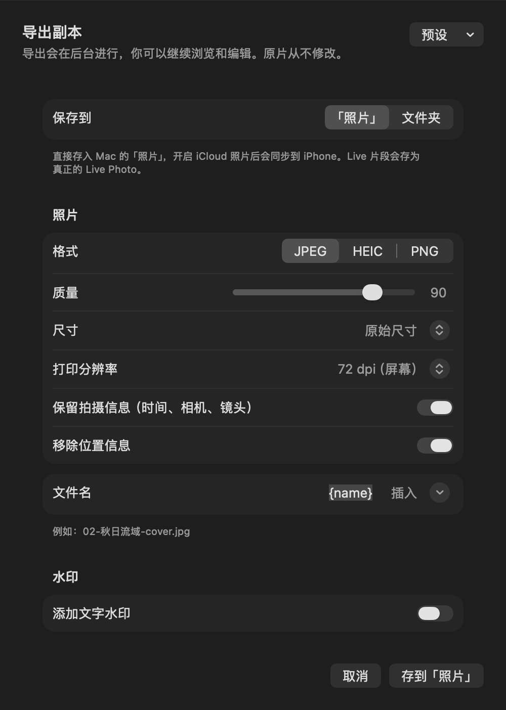

DJI 拍完想在 Mac 上调色？
DJI Mimo 只有手机版
专业软件对新手太重了
打开第一眼，
就是几十个看不懂的滑块

光集
简单得像手机 App 的
Mac 调色工具
点一下「自动」

按 A 一键调好
不满意，⌘Z 撤销
预设，直接用
你的照片预览

点一下就套用
裁剪，直接
在照片上拖

拖四个角缩放，比例自动保持
调完，存进「照片」
同步到你的 iPhone
Live Photo 也行

这个 App，是我和Claude Code一起做的
从 ChatGPT 的原型开始
原片不会被改也不上传任何东西
光集
早期版本
Apple 芯片 Mac · macOS 15+
想试试？评论区告诉我
光集是独立开发的软件，与 DJI、Apple 无关。